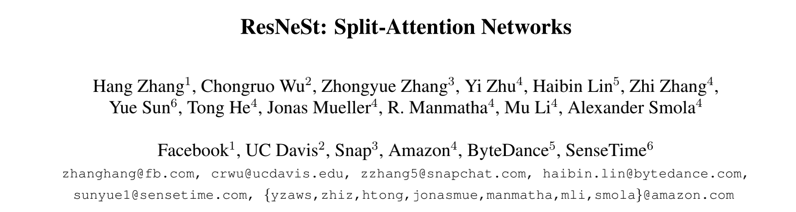
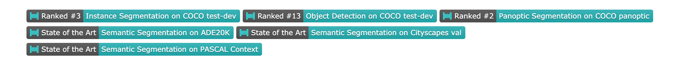
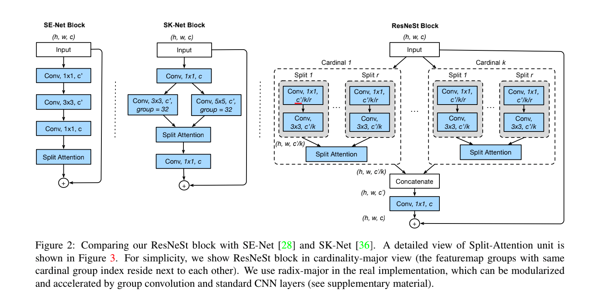
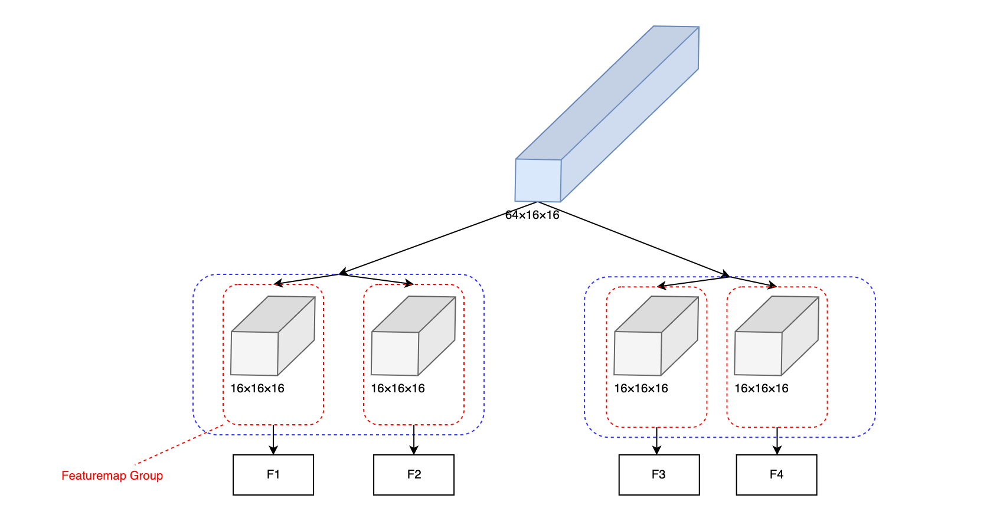
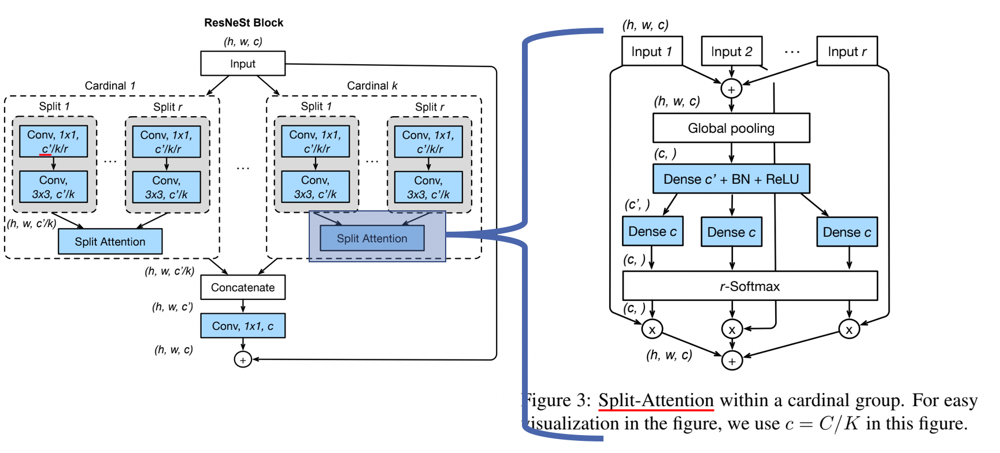
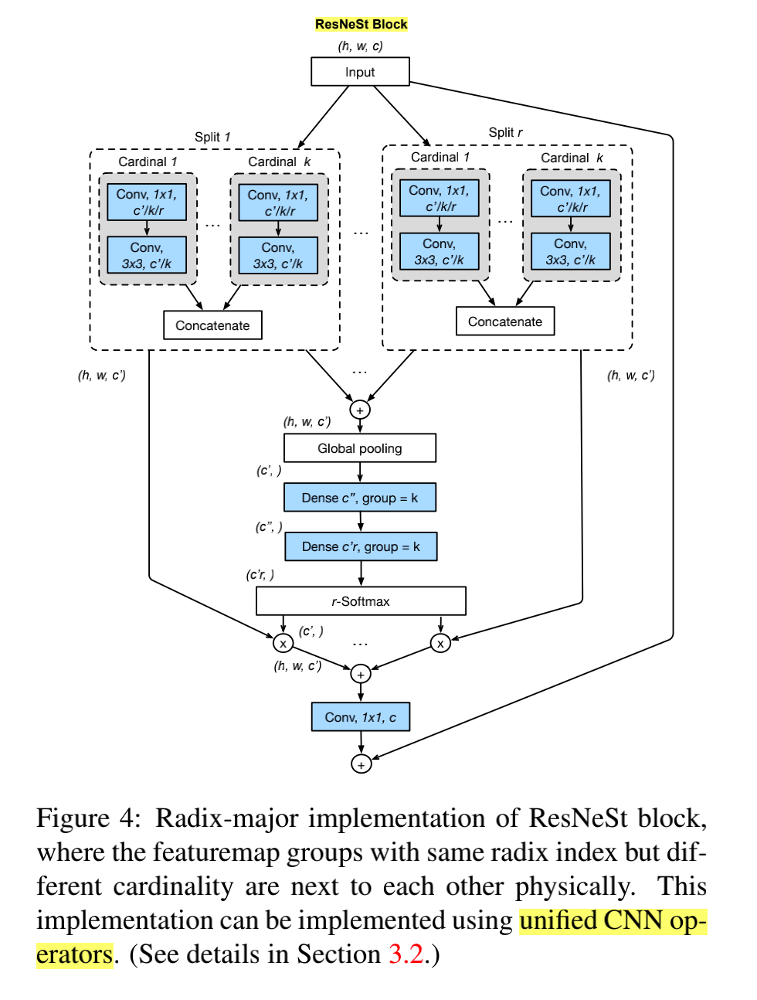
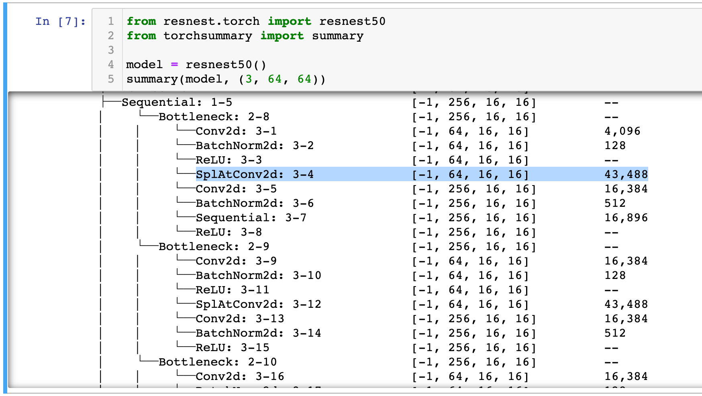
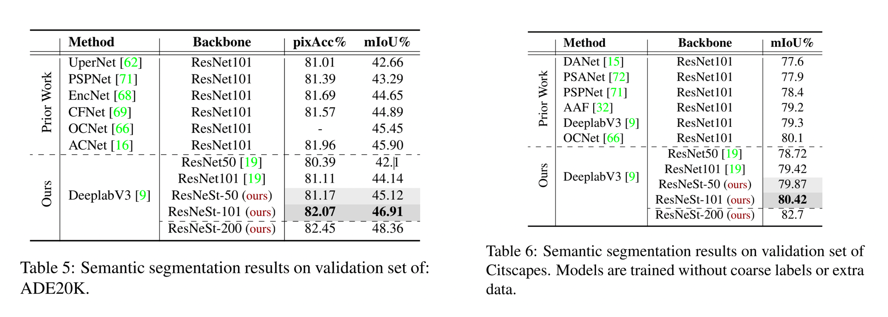
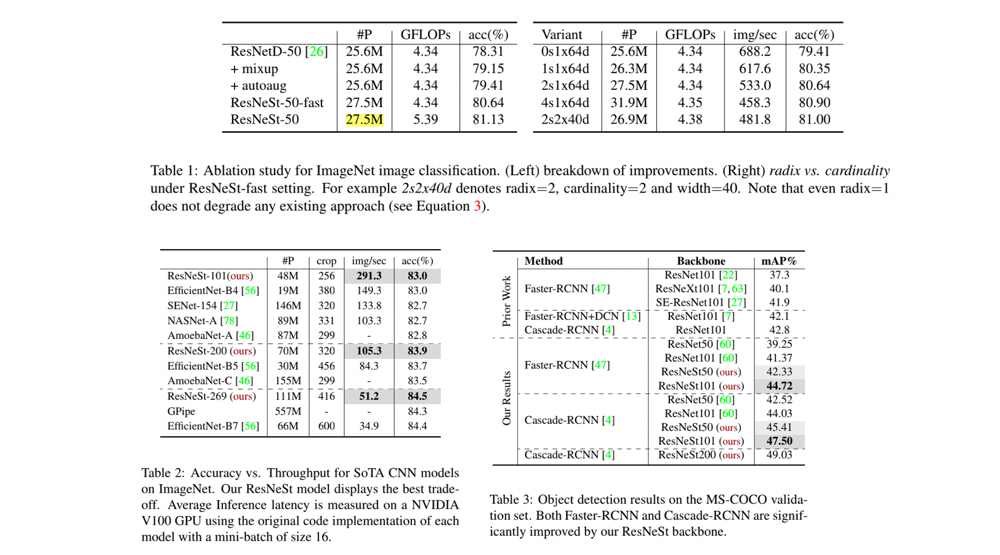

<!DOCTYPE html>
<html lang="en" dir="auto">

<head><meta charset="utf-8">
<meta http-equiv="X-UA-Compatible" content="IE=edge">
<meta name="viewport" content="width=device-width, initial-scale=1, shrink-to-fit=no">

<link rel="stylesheet" href="https://cdn.jsdelivr.net/npm/katex@0.12.0/dist/katex.min.css">
<script defer src="https://cdn.jsdelivr.net/npm/katex@0.12.0/dist/katex.min.js"></script>

<script defer src="https://cdn.jsdelivr.net/npm/katex@0.12.0/dist/contrib/auto-render.min.js" onload="renderMathInElement(document.body);"></script>

<script>
    document.addEventListener("DOMContentLoaded", function() {
        renderMathInElement(document.body, {
            delimiters: [
                {left: "$$", right: "$$", display: true},
                {left: "$", right: "$", display: false}
            ]
        });
    });
</script>
<meta name="robots" content="index, follow">
<title>ResNeSt | Notes</title>
<meta name="keywords" content="CNN, 论文阅读" />
<meta name="description" content="arXiv: https://arxiv.org/abs/2004.08955 时间：2020 年 04 月 SENet（17.09）、SKNet（19.03） 和 ResNeSt（20.04） 可以放在一起进行阅读，这三篇都是注意">
<meta name="author" content="">
<link rel="canonical" href="http://landodo.github.io/posts/20210325-resnest-review/" />
<link crossorigin="anonymous" href="/assets/css/stylesheet.min.c88963fe2d79462000fd0fb1b3737783c32855d340583e4523343f8735c787f0.css" integrity="sha256-yIlj/i15RiAA/Q&#43;xs3N3g8MoVdNAWD5FIzQ/hzXHh/A=" rel="preload stylesheet" as="style">
<link rel="preload" href="./happy-cat.png" as="image">
<script defer crossorigin="anonymous" src="/assets/js/highlight.min.4dcb3c4f38462f66c6b6137227726f5543cb934cca9788f041c087e374491df2.js" integrity="sha256-Tcs8TzhGL2bGthNyJ3JvVUPLk0zKl4jwQcCH43RJHfI="
    onload="hljs.initHighlightingOnLoad();"></script>
<link rel="icon" href="http://landodo.github.io/favicon.ico">
<link rel="icon" type="image/png" sizes="16x16" href="http://landodo.github.io/favicon-16x16.png">
<link rel="icon" type="image/png" sizes="32x32" href="http://landodo.github.io/favicon-32x32.png">
<link rel="apple-touch-icon" href="http://landodo.github.io/apple-touch-icon.png">
<link rel="mask-icon" href="http://landodo.github.io/safari-pinned-tab.svg">
<meta name="theme-color" content="#2e2e33">
<meta name="msapplication-TileColor" content="#2e2e33">
<noscript>
    <style>
        #theme-toggle,
        .top-link {
            display: none;
        }

    </style>
    <style>
        @media (prefers-color-scheme: dark) {
            :root {
                --theme: rgb(29, 30, 32);
                --entry: rgb(46, 46, 51);
                --primary: rgb(218, 218, 219);
                --secondary: rgb(155, 156, 157);
                --tertiary: rgb(65, 66, 68);
                --content: rgb(196, 196, 197);
                --hljs-bg: rgb(46, 46, 51);
                --code-bg: rgb(55, 56, 62);
                --border: rgb(51, 51, 51);
            }

            .list {
                background: var(--theme);
            }

            .list:not(.dark)::-webkit-scrollbar-track {
                background: 0 0;
            }

            .list:not(.dark)::-webkit-scrollbar-thumb {
                border-color: var(--theme);
            }
        }

    </style>
</noscript><meta property="og:title" content="ResNeSt" />
<meta property="og:description" content="arXiv: https://arxiv.org/abs/2004.08955 时间：2020 年 04 月 SENet（17.09）、SKNet（19.03） 和 ResNeSt（20.04） 可以放在一起进行阅读，这三篇都是注意" />
<meta property="og:type" content="article" />
<meta property="og:url" content="http://landodo.github.io/posts/20210325-resnest-review/" /><meta property="article:section" content="posts" />
<meta property="article:published_time" content="2021-03-25T10:17:29&#43;08:00" />
<meta property="article:modified_time" content="2021-03-25T10:17:29&#43;08:00" />

<meta name="twitter:card" content="summary"/>
<meta name="twitter:title" content="ResNeSt"/>
<meta name="twitter:description" content="arXiv: https://arxiv.org/abs/2004.08955 时间：2020 年 04 月 SENet（17.09）、SKNet（19.03） 和 ResNeSt（20.04） 可以放在一起进行阅读，这三篇都是注意"/>


<script type="application/ld+json">
{
  "@context": "https://schema.org",
  "@type": "BreadcrumbList",
  "itemListElement": [
    {
      "@type": "ListItem",
      "position":  1 ,
      "name": "Posts",
      "item": "http://landodo.github.io/posts/"
    }, 
    {
      "@type": "ListItem",
      "position":  2 ,
      "name": "ResNeSt",
      "item": "http://landodo.github.io/posts/20210325-resnest-review/"
    }
  ]
}
</script>
<script type="application/ld+json">
{
  "@context": "https://schema.org",
  "@type": "BlogPosting",
  "headline": "ResNeSt",
  "name": "ResNeSt",
  "description": "arXiv: https://arxiv.org/abs/2004.08955 时间：2020 年 04 月 SENet（17.09）、SKNet（19.03） 和 ResNeSt（20.04） 可以放在一起进行阅读，这三篇都是注意",
  "keywords": [
    "CNN", "论文阅读"
  ],
  "articleBody": " arXiv: https://arxiv.org/abs/2004.08955 时间：2020 年 04 月  SENet（17.09）、SKNet（19.03） 和 ResNeSt（20.04） 可以放在一起进行阅读，这三篇都是注意力机制的经典文献。其体现了一种层层递进、升级强化的过程。\n最后一篇 ResNeSt 可以看做是 SENet 和 SKNet 的集大成之作。\nResNeSt 把 Group Convolution玩得算是炉火纯青，我认为这是它的一个最大的特点。它没有提出什么新的东西，只是把现有的技术（Attention Mechanism ）进行了完美的结合。\nAbstract  ResNeSt integrates the channel\u0002 wise attention with multi-path network representation.\n 本篇论文提出一个模块化的结构：将通道注意力应用到了多分支结构之上。\nResNeSt 中的 ”S“，表示的就是 Split。ResNeSt 由 Split-Attention Block 堆叠而成。\nResNeSt 的取得的成绩如下，有 3 个数据集取得了 SOTA（State of the Art）。\nResNeSt 对比的是 EfficientNet。\nRelate Work (1) CNN Architectures:\n AlexNet: shifted from engineering handcrafted features to engineering network architectures. Network in Network: first uses a global average pooling layer to replace the heavy fully connected layers, and adopts 1×1 convolutional layers to learn non-linear combination of the featuremap channels, which is the first kind of featuremap attention mechanism. （第一个注意力机制） VGG-Net: stacking the same type of network blocks repeatedly Highway Network: highway connection makes the information flow across several layers ResNet: one of the most successful CNN archi\u0002tectures  (2) Multi-path and featuremap Attention:\n GoogLeNet: Multi-path rep\u0002resentation ResNeXt: group convolution, converts the multi-path structure into a unified operation. SE-Net: channel-attention mechanism SK-Net: featuremap attention across two network branches.  总结 ResNeSt：integrates the channelwise attention with multi-path network representation.Split-Attention Network ResNeSt（Split-Attention Network）的核心是 Split-Attention Block。\n解析 Split-Attention Block Split-Attention Block 和核心是 Featuremap Group 和 Split Attention。\n（1）Featuremap Group\n从 Figure 2(Right) 可以看到，ResNeSt Block 的分支结构中又包含着分支，有一种套娃的感觉。我把它想象成二叉树的结构，从根节点到叶子节点的路径称为一个分支。ResNeSt Block 中超参数 K（cardinality）、R（radix）控制分支的数量，总分支数为 G=KR。\n有多少分支，就表示需要将输入的特征图通道数分成多少组。对于输入的特征图 64×16×16，K=2、R=2 表示将特征图分为 4（K*R）组，每组的特征图大小为 16×16×16。\n即：Featuremap Group 总数 为 K×R，每条分支的特征图的通道数等于原始特征图的通道数除以Featuremap Group 总数。可以应用一系列的变换 {F1，F2，……FG} 到每一个单独的组。下图是 K=2、R=2情况，我一般称之为 2 条分支（K=2），每个分支内部有 2 个 Featuremap Group（R=2）。\n（2）Split Attention\nInput 表示的每个特征图组经过一系列变换后的输出，即 $Input = F(Featuremap\\ Group)$。\nSplit Attention 是 ResNeSt 的核心，它将通道注意力机制应用到了每个 Split 分支之上。\nSplit Attention 架构 NOTES：和 Figure 2(Right) 有所不同，但是其实是等价的，Figure 2 更符合人的直觉，对人来说友好。Figure 4 能够方便的使用计算机实现，对计算机友好。\n这里我花了特别长的时间来了解这两种结构为什么是等价的。总结下来，直接阅读源代码是最好的方式。\nSplit Attention Block 的实现 https://github.com/zhanghang1989/ResNeSt\n假设输入的图片大小是 (3×64×64)。SplAtConv2d 表示的就是 Split Attention Block，输入的特征图大小为 (64×16×16)。通过 summary 可以知道，Split Attention 不改变特征图的 shape。\n以 K=2、R=2 为例，对于 (64×16×16) 的特征图，Split Attention Block 做了如下的事情：\n（1）\n源码实现中，不使用 1×1 的卷积。只有一个 3×3 的分组卷积。\n# In: 64×16×16, Out: 128×16×16 # kernel_size=3×3, same_conv, groups=2*2=4 (cadinality*radix) self.conv = Conv2d(in_channels, channels*radix, kernel_size, stride, padding, dilation,  groups=groups*radix, bias=bias, **kwargs) （2）\n# x=(128×16×16) splited = torch.split(x, int(rchannel//self.radix), dim=1)  # if radix=2 # == splited[0] = (64×16×16) # == splited[1] = (64×16×16) （3）\n# In: splited[0], splited[1], Out: 64×16×16 gap = sum(splited) （4）全局平均池化\n# Global Pooling # In: 64×16×16, Out: 64×1×1 gap = F.adaptive_avg_pool2d(gap, 1) （5）\n# channels=64, inter_channels=32, groups=2(cardinality=2) # In: 64×1×1, Out: 32×1×1 self.fc1 = Conv2d(channels, inter_channels, 1, groups=self.cardinality) NOTES：\n# in_channels=64, radix=2, reduction_factor=4 == inter_channels=32 inter_channels = max(in_channels*radix//reduction_factor, 32) （6）\n# inter_channels=32, channels*radix=64*2=128 # In: 32×1×1, Out: 128×1×1 self.fc2 = Conv2d(inter_channels, channels*radix, 1, groups=self.cardinality) （7）\n# rSoftmax # 得到 128 维的注意力向量 atten = self.rsoftmax(atten).view(batch, -1, 1, 1) （8）\n# rchannel=128 attens = torch.split(atten, int(rchannel//self.radix), dim=1) # attens[0] = 64 # attens[1] = 64 （9）\n# (64×16×16) 的特征图乘以其注意力权重 (64×1×1) out = sum([att*split for (att, split) in zip(attens, splited)]) out 即为 Split Attention Block 的输出，其 shape = (64×16×16)。\n实验结果 （1）SOTA Datasets\n（2）ImageNet \u0026 COCO\n",
  "wordCount" : "1652",
  "inLanguage": "en",
  "datePublished": "2021-03-25T10:17:29+08:00",
  "dateModified": "2021-03-25T10:17:29+08:00",
  "mainEntityOfPage": {
    "@type": "WebPage",
    "@id": "http://landodo.github.io/posts/20210325-resnest-review/"
  },
  "publisher": {
    "@type": "Organization",
    "name": "Notes",
    "logo": {
      "@type": "ImageObject",
      "url": "http://landodo.github.io/favicon.ico"
    }
  }
}
</script>
</head>

<body class="" id="top">
<script>
    if (localStorage.getItem("pref-theme") === "dark") {
        document.body.classList.add('dark');
    } else if (localStorage.getItem("pref-theme") === "light") {
        document.body.classList.remove('dark')
    } else if (window.matchMedia('(prefers-color-scheme: dark)').matches) {
        document.body.classList.add('dark');
    }

</script>

<header class="header">
    <nav class="nav">
        <div class="logo">
            <a href="http://landodo.github.io/" accesskey="h" title="Notes (Alt + H)">
                Notes</a>
            <span class="logo-switches">
                <button id="theme-toggle" accesskey="t" title="(Alt + T)">
                    <svg id="moon" xmlns="http://www.w3.org/2000/svg" width="24" height="24" viewBox="0 0 24 24"
                        fill="none" stroke="currentColor" stroke-width="2" stroke-linecap="round"
                        stroke-linejoin="round">
                        <path d="M21 12.79A9 9 0 1 1 11.21 3 7 7 0 0 0 21 12.79z"></path>
                    </svg>
                    <svg id="sun" xmlns="http://www.w3.org/2000/svg" width="24" height="24" viewBox="0 0 24 24"
                        fill="none" stroke="currentColor" stroke-width="2" stroke-linecap="round"
                        stroke-linejoin="round">
                        <circle cx="12" cy="12" r="5"></circle>
                        <line x1="12" y1="1" x2="12" y2="3"></line>
                        <line x1="12" y1="21" x2="12" y2="23"></line>
                        <line x1="4.22" y1="4.22" x2="5.64" y2="5.64"></line>
                        <line x1="18.36" y1="18.36" x2="19.78" y2="19.78"></line>
                        <line x1="1" y1="12" x2="3" y2="12"></line>
                        <line x1="21" y1="12" x2="23" y2="12"></line>
                        <line x1="4.22" y1="19.78" x2="5.64" y2="18.36"></line>
                        <line x1="18.36" y1="5.64" x2="19.78" y2="4.22"></line>
                    </svg>
                </button>
            </span>
        </div>
        <ul id="menu">
            <li>
                <a href="http://landodo.github.io/search" title="Search (Alt &#43; /)" accesskey=/>
                    <span>Search</span>
                </a>
            </li>
            <li>
                <a href="http://landodo.github.io/" title="Home">
                    <span>Home</span>
                </a>
            </li>
            <li>
                <a href="http://landodo.github.io/archives/" title="Archives">
                    <span>Archives</span>
                </a>
            </li>
            <li>
                <a href="http://landodo.github.io/tags" title="Tag">
                    <span>Tag</span>
                </a>
            </li>
            <li>
                <a href="http://landodo.github.io/about" title="About">
                    <span>About</span>
                </a>
            </li>
            <li>
                <a href="http://landodo.github.io/cs-zoo" title="CS ZOO">
                    <span>CS ZOO</span>
                </a>
            </li>
        </ul>
    </nav>
</header>
<main class="main">

<article class="post-single">
  <header class="post-header">
    <div class="breadcrumbs"><a href="http://landodo.github.io/">Home</a>&nbsp;»&nbsp;<a href="http://landodo.github.io/posts/">Posts</a></div>
    <h1 class="post-title">
      ResNeSt
    </h1>
    <div class="post-meta"><span title='2021-03-25 10:17:29 +0800 CST'>March 25, 2021</span>&nbsp;·&nbsp;4 min&nbsp;·&nbsp;1652 words

</div>
  </header> <div class="toc">
    <details  open>
        <summary accesskey="c" title="(Alt + C)">
            <span class="details">Table of Contents</span>
        </summary>

        <div class="inner"><ul>
                <li>
                    <a href="#abstract" aria-label="Abstract">Abstract</a></li>
                <li>
                    <a href="#relate-work" aria-label="Relate Work">Relate Work</a></li>
                <li>
                    <a href="#split-attention--network" aria-label="Split-Attention  Network">Split-Attention  Network</a><ul>
                        
                <li>
                    <a href="#%e8%a7%a3%e6%9e%90-split-attention-block" aria-label="解析 Split-Attention Block">解析 Split-Attention Block</a></li></ul>
                </li>
                <li>
                    <a href="#split-attention-%e6%9e%b6%e6%9e%84" aria-label="Split Attention 架构">Split Attention 架构</a><ul>
                        
                <li>
                    <a href="#split-attention-block-%e7%9a%84%e5%ae%9e%e7%8e%b0" aria-label="Split Attention Block 的实现">Split Attention Block 的实现</a></li></ul>
                </li>
                <li>
                    <a href="#%e5%ae%9e%e9%aa%8c%e7%bb%93%e6%9e%9c" aria-label="实验结果">实验结果</a>
                </li>
            </ul>
        </div>
    </details>
</div>

  <div class="post-content"><p>
</p>
<ul>
<li>arXiv: <a href="https://arxiv.org/abs/2004.08955">https://arxiv.org/abs/2004.08955</a></li>
<li>时间：2020 年 04 月</li>
</ul>
<p>SENet（17.09）、SKNet（19.03） 和 ResNeSt（20.04） 可以放在一起进行阅读，这三篇都是注意力机制的经典文献。其体现了一种层层递进、升级强化的过程。</p>
<p>最后一篇 ResNeSt 可以看做是 SENet 和 SKNet 的集大成之作。</p>
<p>ResNeSt 把 <!-- raw HTML omitted -->Group Convolution<!-- raw HTML omitted --> 玩得算是炉火纯青，我认为这是它的一个最大的特点。它没有提出什么新的东西，只是把现有的技术（Attention Mechanism ）进行了完美的结合。</p>
<h2 id="abstract">Abstract<a hidden class="anchor" aria-hidden="true" href="#abstract">#</a></h2>
<blockquote>
<p>ResNeSt integrates the channel wise attention with multi-path network representation.</p>
</blockquote>
<p>本篇论文提出一个模块化的结构：将通道注意力应用到了多分支结构之上。</p>
<p>ResNe<!-- raw HTML omitted -->S<!-- raw HTML omitted -->t 中的 ”S“，表示的就是 <!-- raw HTML omitted -->S<!-- raw HTML omitted -->plit。ResNeSt 由 Split-Attention Block 堆叠而成。</p>
<p>ResNeSt 的取得的成绩如下，有 3 个数据集取得了 SOTA（State of the Art）。</p>
<p>
</p>
<p>ResNeSt 对比的是 EfficientNet。</p>
<h2 id="relate-work">Relate Work<a hidden class="anchor" aria-hidden="true" href="#relate-work">#</a></h2>
<p><strong>(1) CNN Architectures:</strong></p>
<ul>
<li><em>AlexNet</em>: shifted from engineering handcrafted features to engineering network architectures.</li>
<li><em>Network in Network</em>: first uses a <strong>global average pooling layer</strong> to replace the heavy fully connected layers, and adopts <strong>1×1 convolutional layers</strong> to learn non-linear combination of the featuremap channels, which is the <strong>first kind of featuremap attention mechanism</strong>. （第一个注意力机制）</li>
<li><em>VGG-Net</em>:  stacking the same type of network blocks repeatedly</li>
<li><em>Highway Network</em>: highway connection makes the information flow across several layers</li>
<li><em>ResNet</em>: one of the most successful CNN architectures</li>
</ul>
<p><strong>(2) Multi-path and featuremap Attention:</strong></p>
<ul>
<li><em>GoogLeNet</em>: Multi-path representation</li>
<li><em>ResNeXt</em>: group convolution, converts the multi-path structure into a unified operation.</li>
<li><em>SE-Net</em>: channel-attention mechanism</li>
<li><em>SK-Net</em>: featuremap attention across two network branches.</li>
</ul>
<p>总结 ResNeSt：<!-- raw HTML omitted -->integrates the channelwise attention with multi-path network representation.<!-- raw HTML omitted --></p>
<h2 id="split-attention--network">Split-Attention  Network<a hidden class="anchor" aria-hidden="true" href="#split-attention--network">#</a></h2>
<p>ResNeSt（Split-Attention Network）的核心是 Split-Attention Block。</p>
<p>
</p>
<h3 id="解析-split-attention-block">解析 Split-Attention Block<a hidden class="anchor" aria-hidden="true" href="#解析-split-attention-block">#</a></h3>
<p>Split-Attention Block 和核心是 Featuremap Group 和 Split Attention。</p>
<p><strong>（1）Featuremap Group</strong></p>
<p>从 Figure 2(Right) 可以看到，ResNeSt Block 的分支结构中又包含着分支，有一种<strong>套娃</strong>的感觉。我把它想象成二叉树的结构，从根节点到叶子节点的路径称为一个分支。ResNeSt Block 中超参数 K（cardinality）、R（radix）控制分支的数量，总分支数为 G=KR。</p>
<p>有多少分支，就表示需要将输入的特征图通道数分成多少组。对于输入的特征图 64×16×16，K=2、R=2 表示将特征图分为 4（K*R）组，每组的特征图大小为 16×16×16。</p>
<p>即：Featuremap Group 总数 为 K×R，每条分支的特征图的通道数等于原始特征图的通道数除以Featuremap Group 总数。可以应用一系列的变换 {F1，F2，&hellip;&hellip;FG} 到每一个单独的组。下图是 <!-- raw HTML omitted -->K=2<!-- raw HTML omitted -->、<!-- raw HTML omitted -->R=2<!-- raw HTML omitted --> 情况，我一般称之为 2 条分支（K=2），每个分支内部有 2 个 Featuremap Group（R=2）。</p>
<p>
</p>
<p><strong>（2）Split Attention</strong></p>
<p>Input 表示的每个特征图组经过一系列变换后的输出，即 $Input = F(Featuremap\ Group)$。</p>
<p>
</p>
<p>Split Attention 是 ResNeSt 的核心，它将<strong>通道注意力机制应用到了每个 Split 分支之上</strong>。</p>
<h2 id="split-attention-架构">Split Attention 架构<a hidden class="anchor" aria-hidden="true" href="#split-attention-架构">#</a></h2>
<p>
</p>
<p><!-- raw HTML omitted -->NOTES<!-- raw HTML omitted -->：和 Figure 2(Right) 有所不同，但是其实是等价的，Figure 2 更符合人的直觉，对人来说友好。Figure 4 能够方便的使用计算机实现，对计算机友好。</p>
<p>这里我花了特别长的时间来了解这两种结构为什么是等价的。总结下来，<strong>直接阅读源代码</strong>是最好的方式。</p>
<h3 id="split-attention-block-的实现">Split Attention Block 的实现<a hidden class="anchor" aria-hidden="true" href="#split-attention-block-的实现">#</a></h3>
<p><a href="https://github.com/zhanghang1989/ResNeSt">https://github.com/zhanghang1989/ResNeSt</a></p>
<p>假设输入的图片大小是 (3×64×64)。SplAtConv2d 表示的就是 Split Attention Block，输入的特征图大小为 (64×16×16)。通过 <code>summary</code> 可以知道，Split Attention 不改变特征图的 shape。</p>
<p>
</p>
<p>以 K=2、R=2 为例，对于 (64×16×16) 的特征图，Split Attention Block 做了如下的事情：</p>
<p>（1）</p>
<p>源码实现中，不使用 1×1 的卷积。只有一个 3×3 的分组卷积。</p>
<div class="highlight"><pre tabindex="0" style="color:#f8f8f2;background-color:#272822;-moz-tab-size:4;-o-tab-size:4;tab-size:4;"><code class="language-python" data-lang="python"><span style="display:flex;"><span><span style="color:#75715e"># In: 64×16×16, Out: 128×16×16</span>
</span></span><span style="display:flex;"><span><span style="color:#75715e"># kernel_size=3×3, same_conv, groups=2*2=4 (cadinality*radix)</span>
</span></span><span style="display:flex;"><span>self<span style="color:#f92672">.</span>conv <span style="color:#f92672">=</span> Conv2d(in_channels, channels<span style="color:#f92672">*</span>radix, kernel_size, stride, padding, dilation,
</span></span><span style="display:flex;"><span>                               groups<span style="color:#f92672">=</span>groups<span style="color:#f92672">*</span>radix, bias<span style="color:#f92672">=</span>bias, <span style="color:#f92672">**</span>kwargs)
</span></span></code></pre></div><p>（2）</p>
<div class="highlight"><pre tabindex="0" style="color:#f8f8f2;background-color:#272822;-moz-tab-size:4;-o-tab-size:4;tab-size:4;"><code class="language-python" data-lang="python"><span style="display:flex;"><span><span style="color:#75715e"># x=(128×16×16)</span>
</span></span><span style="display:flex;"><span>splited <span style="color:#f92672">=</span> torch<span style="color:#f92672">.</span>split(x, int(rchannel<span style="color:#f92672">//</span>self<span style="color:#f92672">.</span>radix), dim<span style="color:#f92672">=</span><span style="color:#ae81ff">1</span>)
</span></span><span style="display:flex;"><span>
</span></span><span style="display:flex;"><span><span style="color:#75715e"># if radix=2</span>
</span></span><span style="display:flex;"><span><span style="color:#75715e"># ==&gt; splited[0] = (64×16×16)</span>
</span></span><span style="display:flex;"><span><span style="color:#75715e"># ==&gt; splited[1] = (64×16×16)</span>
</span></span></code></pre></div><p>（3）</p>
<div class="highlight"><pre tabindex="0" style="color:#f8f8f2;background-color:#272822;-moz-tab-size:4;-o-tab-size:4;tab-size:4;"><code class="language-python" data-lang="python"><span style="display:flex;"><span><span style="color:#75715e"># In: splited[0], splited[1],   Out: 64×16×16</span>
</span></span><span style="display:flex;"><span>gap <span style="color:#f92672">=</span> sum(splited)
</span></span></code></pre></div><p>（4）全局平均池化</p>
<div class="highlight"><pre tabindex="0" style="color:#f8f8f2;background-color:#272822;-moz-tab-size:4;-o-tab-size:4;tab-size:4;"><code class="language-python" data-lang="python"><span style="display:flex;"><span><span style="color:#75715e"># Global Pooling</span>
</span></span><span style="display:flex;"><span><span style="color:#75715e"># In: 64×16×16, Out: 64×1×1</span>
</span></span><span style="display:flex;"><span>gap <span style="color:#f92672">=</span> F<span style="color:#f92672">.</span>adaptive_avg_pool2d(gap, <span style="color:#ae81ff">1</span>)
</span></span></code></pre></div><p>（5）</p>
<div class="highlight"><pre tabindex="0" style="color:#f8f8f2;background-color:#272822;-moz-tab-size:4;-o-tab-size:4;tab-size:4;"><code class="language-python" data-lang="python"><span style="display:flex;"><span><span style="color:#75715e"># channels=64, inter_channels=32, groups=2(cardinality=2)</span>
</span></span><span style="display:flex;"><span><span style="color:#75715e"># In: 64×1×1, Out: 32×1×1</span>
</span></span><span style="display:flex;"><span>self<span style="color:#f92672">.</span>fc1 <span style="color:#f92672">=</span> Conv2d(channels, inter_channels, <span style="color:#ae81ff">1</span>, groups<span style="color:#f92672">=</span>self<span style="color:#f92672">.</span>cardinality)
</span></span></code></pre></div><p>NOTES：</p>
<div class="highlight"><pre tabindex="0" style="color:#f8f8f2;background-color:#272822;-moz-tab-size:4;-o-tab-size:4;tab-size:4;"><code class="language-python" data-lang="python"><span style="display:flex;"><span><span style="color:#75715e"># in_channels=64, radix=2, reduction_factor=4 ==&gt; inter_channels=32</span>
</span></span><span style="display:flex;"><span>inter_channels <span style="color:#f92672">=</span> max(in_channels<span style="color:#f92672">*</span>radix<span style="color:#f92672">//</span>reduction_factor, <span style="color:#ae81ff">32</span>)
</span></span></code></pre></div><p>（6）</p>
<div class="highlight"><pre tabindex="0" style="color:#f8f8f2;background-color:#272822;-moz-tab-size:4;-o-tab-size:4;tab-size:4;"><code class="language-python" data-lang="python"><span style="display:flex;"><span><span style="color:#75715e"># inter_channels=32, channels*radix=64*2=128</span>
</span></span><span style="display:flex;"><span><span style="color:#75715e"># In: 32×1×1, Out: 128×1×1</span>
</span></span><span style="display:flex;"><span>self<span style="color:#f92672">.</span>fc2 <span style="color:#f92672">=</span> Conv2d(inter_channels, channels<span style="color:#f92672">*</span>radix, <span style="color:#ae81ff">1</span>, groups<span style="color:#f92672">=</span>self<span style="color:#f92672">.</span>cardinality)
</span></span></code></pre></div><p>（7）</p>
<div class="highlight"><pre tabindex="0" style="color:#f8f8f2;background-color:#272822;-moz-tab-size:4;-o-tab-size:4;tab-size:4;"><code class="language-python" data-lang="python"><span style="display:flex;"><span><span style="color:#75715e"># rSoftmax</span>
</span></span><span style="display:flex;"><span><span style="color:#75715e"># 得到 128 维的注意力向量</span>
</span></span><span style="display:flex;"><span>atten <span style="color:#f92672">=</span> self<span style="color:#f92672">.</span>rsoftmax(atten)<span style="color:#f92672">.</span>view(batch, <span style="color:#f92672">-</span><span style="color:#ae81ff">1</span>, <span style="color:#ae81ff">1</span>, <span style="color:#ae81ff">1</span>)
</span></span></code></pre></div><p>（8）</p>
<div class="highlight"><pre tabindex="0" style="color:#f8f8f2;background-color:#272822;-moz-tab-size:4;-o-tab-size:4;tab-size:4;"><code class="language-python" data-lang="python"><span style="display:flex;"><span><span style="color:#75715e"># rchannel=128</span>
</span></span><span style="display:flex;"><span>attens <span style="color:#f92672">=</span> torch<span style="color:#f92672">.</span>split(atten, int(rchannel<span style="color:#f92672">//</span>self<span style="color:#f92672">.</span>radix), dim<span style="color:#f92672">=</span><span style="color:#ae81ff">1</span>)
</span></span><span style="display:flex;"><span><span style="color:#75715e"># attens[0] = 64</span>
</span></span><span style="display:flex;"><span><span style="color:#75715e"># attens[1] = 64</span>
</span></span></code></pre></div><p>（9）</p>
<div class="highlight"><pre tabindex="0" style="color:#f8f8f2;background-color:#272822;-moz-tab-size:4;-o-tab-size:4;tab-size:4;"><code class="language-python" data-lang="python"><span style="display:flex;"><span><span style="color:#75715e"># (64×16×16) 的特征图乘以其注意力权重 (64×1×1)</span>
</span></span><span style="display:flex;"><span>out <span style="color:#f92672">=</span> sum([att<span style="color:#f92672">*</span>split <span style="color:#66d9ef">for</span> (att, split) <span style="color:#f92672">in</span> zip(attens, splited)])
</span></span></code></pre></div><p>out 即为 Split Attention Block 的输出，其 shape = (64×16×16)。</p>
<h2 id="实验结果">实验结果<a hidden class="anchor" aria-hidden="true" href="#实验结果">#</a></h2>
<p>（1）SOTA Datasets</p>
<p>
</p>
<p>（2）ImageNet &amp; COCO</p>
<p>
</p>


  </div>

  <footer class="post-footer">
    <ul class="post-tags">
      <li><a href="http://landodo.github.io/tags/cnn/">CNN</a></li>
      <li><a href="http://landodo.github.io/tags/%E8%AE%BA%E6%96%87%E9%98%85%E8%AF%BB/">论文阅读</a></li>
    </ul>
<nav class="paginav">
  <a class="prev" href="http://landodo.github.io/posts/20210401-image-segmentation-survey/">
    <span class="title">« Prev Page</span>
    <br>
    <span>Image Segmentation Using Deep Learning: A Survey</span>
  </a>
  <a class="next" href="http://landodo.github.io/posts/20210315-sknet-review/">
    <span class="title">Next Page »</span>
    <br>
    <span>Selective Kernel Network 解析</span>
  </a>
</nav>

  </footer>
</article>
    </main>
    
<footer class="footer">
    <span>Landon</span>
    <span>
        Powered by
        <a href="https://gohugo.io/" rel="noopener noreferrer" target="_blank">Hugo</a> &
        <a href="https://git.io/hugopapermod" rel="noopener" target="_blank">PaperMod</a>
    </span>
</footer>
<a href="#top" aria-label="go to top" title="Go to Top (Alt + G)" class="top-link" id="top-link" accesskey="g">
    <svg xmlns="http://www.w3.org/2000/svg" viewBox="0 0 12 6" fill="currentColor">
        <path d="M12 6H0l6-6z" />
    </svg>
</a>

<script>
    let menu = document.getElementById('menu')
    if (menu) {
        menu.scrollLeft = localStorage.getItem("menu-scroll-position");
        menu.onscroll = function () {
            localStorage.setItem("menu-scroll-position", menu.scrollLeft);
        }
    }

    document.querySelectorAll('a[href^="#"]').forEach(anchor => {
        anchor.addEventListener("click", function (e) {
            e.preventDefault();
            var id = this.getAttribute("href").substr(1);
            if (!window.matchMedia('(prefers-reduced-motion: reduce)').matches) {
                document.querySelector(`[id='${decodeURIComponent(id)}']`).scrollIntoView({
                    behavior: "smooth"
                });
            } else {
                document.querySelector(`[id='${decodeURIComponent(id)}']`).scrollIntoView();
            }
            if (id === "top") {
                history.replaceState(null, null, " ");
            } else {
                history.pushState(null, null, `#${id}`);
            }
        });
    });

</script>
<script>
    var mybutton = document.getElementById("top-link");
    window.onscroll = function () {
        if (document.body.scrollTop > 800 || document.documentElement.scrollTop > 800) {
            mybutton.style.visibility = "visible";
            mybutton.style.opacity = "1";
        } else {
            mybutton.style.visibility = "hidden";
            mybutton.style.opacity = "0";
        }
    };

</script>
<script>
    document.getElementById("theme-toggle").addEventListener("click", () => {
        if (document.body.className.includes("dark")) {
            document.body.classList.remove('dark');
            localStorage.setItem("pref-theme", 'light');
        } else {
            document.body.classList.add('dark');
            localStorage.setItem("pref-theme", 'dark');
        }
    })

</script>
<script>
    document.querySelectorAll('pre > code').forEach((codeblock) => {
        const container = codeblock.parentNode.parentNode;

        const copybutton = document.createElement('button');
        copybutton.classList.add('copy-code');
        copybutton.innerText = 'copy';

        function copyingDone() {
            copybutton.innerText = 'copied!';
            setTimeout(() => {
                copybutton.innerText = 'copy';
            }, 2000);
        }

        copybutton.addEventListener('click', (cb) => {
            if ('clipboard' in navigator) {
                navigator.clipboard.writeText(codeblock.textContent);
                copyingDone();
                return;
            }

            const range = document.createRange();
            range.selectNodeContents(codeblock);
            const selection = window.getSelection();
            selection.removeAllRanges();
            selection.addRange(range);
            try {
                document.execCommand('copy');
                copyingDone();
            } catch (e) { };
            selection.removeRange(range);
        });

        if (container.classList.contains("highlight")) {
            container.appendChild(copybutton);
        } else if (container.parentNode.firstChild == container) {
            
        } else if (codeblock.parentNode.parentNode.parentNode.parentNode.parentNode.nodeName == "TABLE") {
            
            codeblock.parentNode.parentNode.parentNode.parentNode.parentNode.appendChild(copybutton);
        } else {
            
            codeblock.parentNode.appendChild(copybutton);
        }
    });
</script>
</body>

</html>
